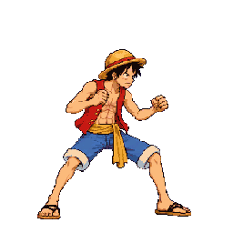
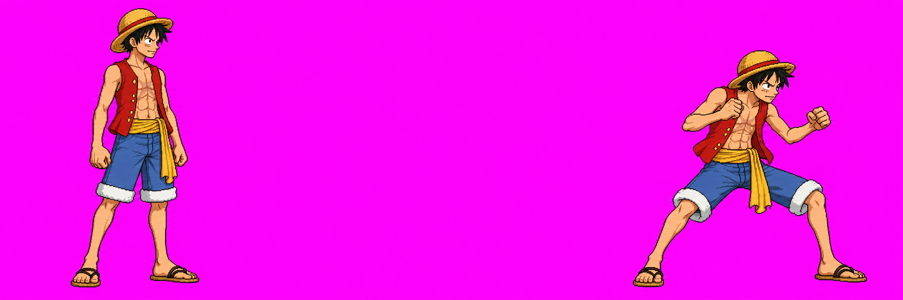
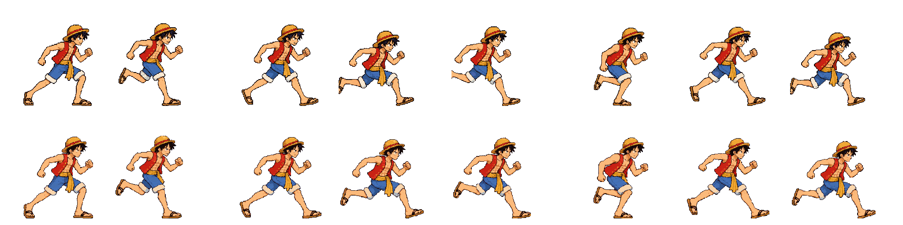
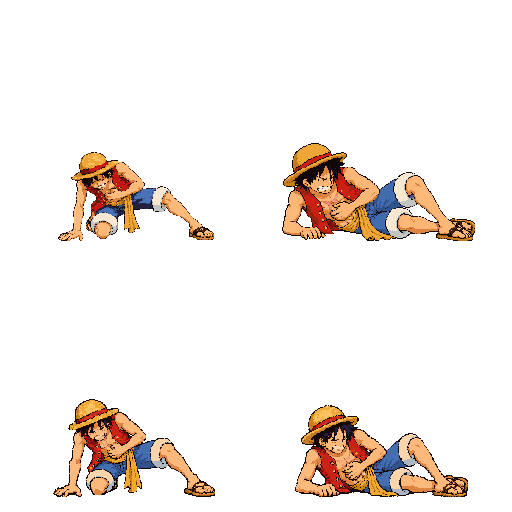
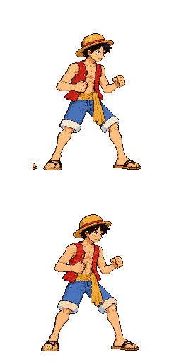

Character Art Audit #2 · Luffy · B9, B10 and R4
Luffy redraw and repair review
The user approved specialForward v02 via Claude relay audit2 #9 under their instruction to auto-approve while away; they had not yet seen the image. Run v02 and down v04 still need visual approval. This review pack is candidate-only; it does not replace the production atlas. Visual approval and final Astra anatomy/scale review are separate steps.
Review status
Eight-frame run redraw. One image-generation call. Existing bodyHeight and pack scale are unchanged.
Two-frame crawl/lying redraw. Three image-generation calls total, the 3/3 limit. Existing timing is unchanged.
Approved via relay #9 under the overnight auto-approval instruction; user had not yet viewed it. Pixel-only f5 repair removes the detached orange speck. No image-generation calls; packScale remains 1.08.
Final Astra review of these exact packed candidates has not run. The prior diagnostic hold for specialForward's arm/palm fragments remains.
run/down approval needed The gallery shows packed candidate cells at 256×256 and the raw strips. The manifest's approvedVersion is run v01, down v03 and specialForward v02. The candidate atlas remains review-only because it includes unapproved run v02 and down v04.
Approved Luffy references


B9 · run v02
Compare v01 on the first row with v02 on the second row. Each cell is from the quantized atlas at its native 256×256 density. The eight-frame sequence and 60 ms timing remain unchanged. Measured frame placement offsets clear the source clip on f3, f4 and f7; bodyHeight 204 and the existing character packScale 0.92 are unchanged.

Top row: live run v01. Bottom row: candidate run v02. Open raw run v02 · source and placement record.

B10 · down v04
Compare v03 on the first row with v04 on the second row. The two frames retain [80, 420] ms timing, bodyHeight 106 and the existing character packScale 0.92. The candidate used all three authorized image calls.

Top row: live down v03. Bottom row: candidate down v04. Open raw down v04 · source and attempt record.

R4 · specialForward v02, frame 5 approved as drawn · Astra hold remains
The two cells show live v01 above and repaired v02 below. The repair clears only the isolated orange fragment at the rear foot; it changes no pose, timing or scale. The user approved v02 via Claude relay audit2 #9 under their overnight instruction; the user had not yet seen the image. The existing diagnostic exemption and Astra hold for discontinuous arm/palm fragments remain in place.

Open raw specialForward v02 · pixel repair provenance · candidate atlas sheet · candidate animation metadata.


Candidate atlas and technical status
The review atlas is a 48-color candidate pack for side-by-side review only. Its temporary manual-QA overrides were used only to build this gallery; they are not in art/manifest.json and do not constitute an Astra pass. Run v02 and down v04 still await visual approval. Final Astra audit remains pending; specialForward v02 is approved but its earlier diagnostic exemption and arm/palm technical hold remain.
Pack details and exact SHA-256 values: ATLAS_INFO.md · generation and repair provenance: ATTEMPT_INVENTORY.md.